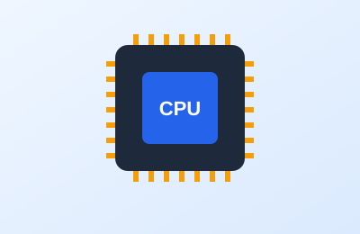

Tema 1 de 5
El procesador (CPU): el cerebro de tu PC

Descripción
El procesador, o CPU, es el componente que ejecuta las instrucciones de todos los programas: abrir un navegador, compilar código o correr un juego. Mientras más núcleos y mayor frecuencia tiene, más tareas puede resolver al mismo tiempo.
Al elegirlo, lo primero que debes revisar es el socket: el conector físico donde se instala. Debe coincidir exactamente con el de la placa madre, de lo contrario no encajará.
Datos clave
- Núcleos e hilos: definen cuántas tareas atiende a la vez.
- Frecuencia (GHz): qué tan rápido trabaja cada núcleo.
- Socket: debe ser compatible con la placa madre.
Cómo se instala
- Abre el seguro del socket de la placa madre.
- Alinea el triángulo dorado del procesador con la marca del socket.
- Déjalo caer sin presionar y cierra el seguro.